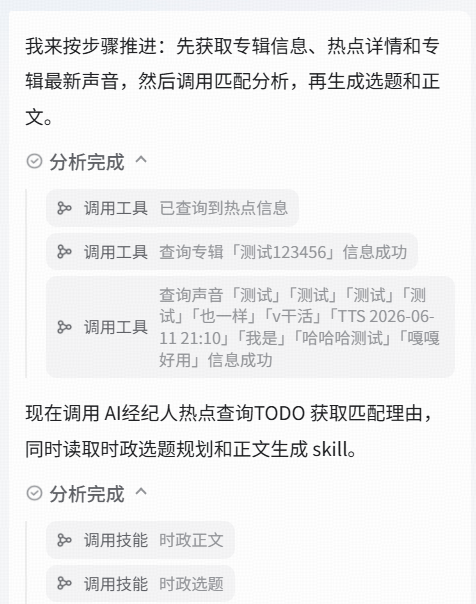
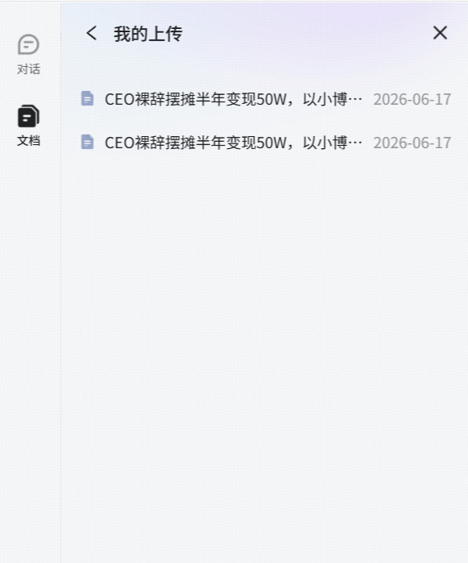
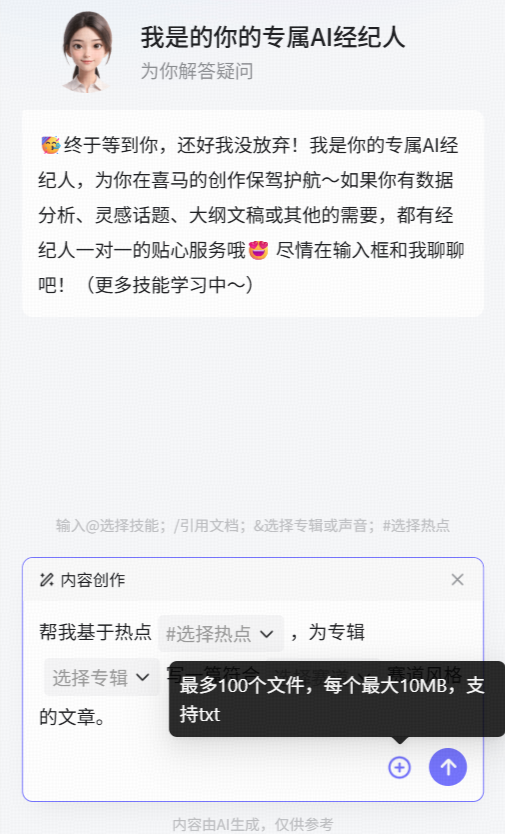
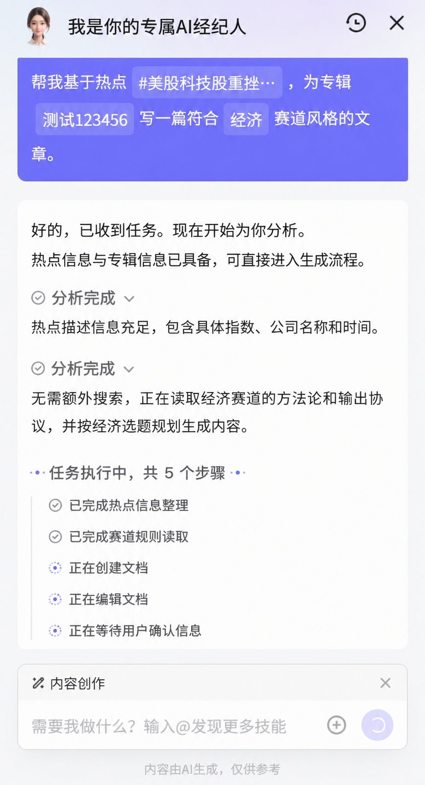
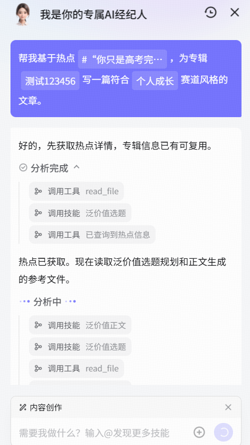
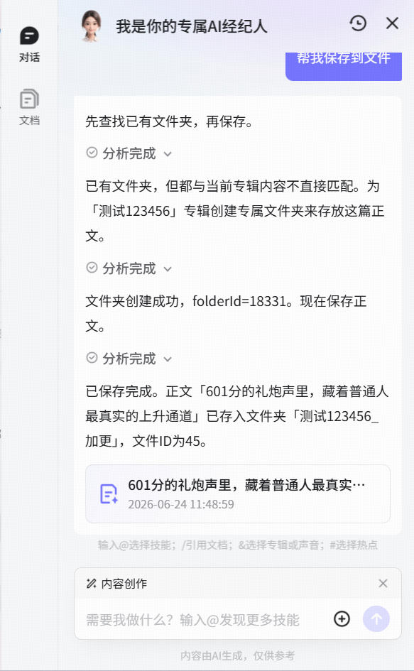
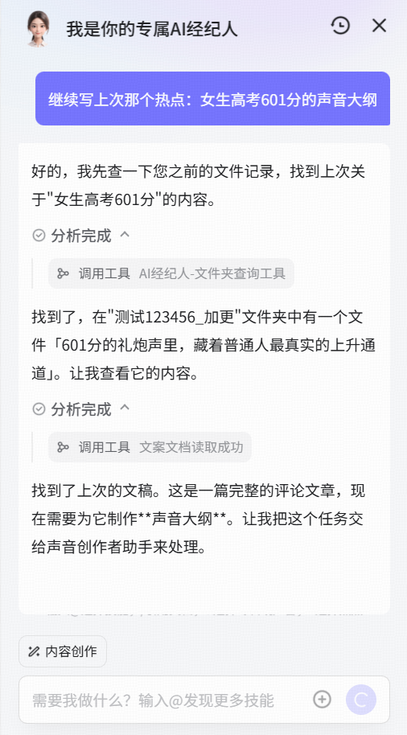
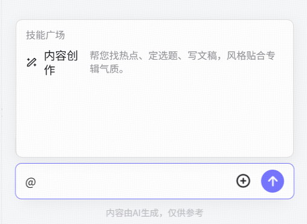
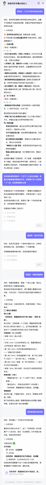
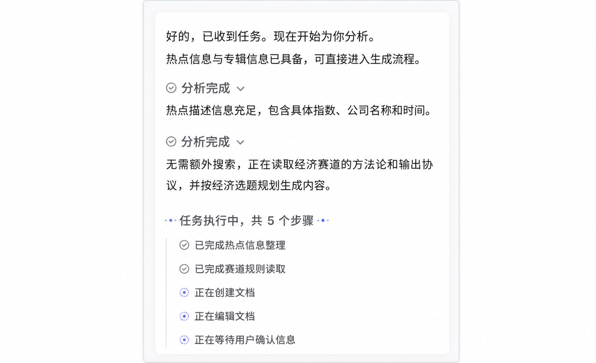

追热点型
个人成长赛道创作者
热点入口 → # 选话题 → & 选专辑 → 10 分钟出初稿，再花 20 分钟润色就能发。
案例视频
images/case-hot.mp4
选入口 → 说需求 → 看 AI 执行 → 文档库拿成稿 · 自动演示中
从热点 / 专辑 / 创作中心打开，业务信息自动带入
images/flow-step-1.png直接打字或用模板选好热点、专辑、风格
images/flow-step-2.png执行过程全程可见，复杂任务先确认计划

images/flow-step-3.png文档库查看编辑，稿子变成可复用资产

images/flow-step-4.pngimages/flow-step-1.png
面向创作者从追热点、读素材、定计划、看过程，到保存成稿和接续历史的完整创作工作流。
# 选热点 + & 选专辑 + 模板定风格，启动成本从 30 分钟降到 1 分钟。
images/feature-hot.png
+ 上传 txt 素材，AI 读要点你来定方向，省去 1 小时整理时间。

images/feature-doc.png
复杂任务不再一把梭——确认计划、逐步推进、中途可纠偏，返工率大幅降低。

images/feature-plan.png
搜索、写稿、改稿实时展示进度——知道 AI 在干什么、干到哪了，敢放心去泡杯咖啡。

images/feature-visible.png
说「帮我保存到文件」，AI 自动写入文档库——灵感不流失，格式通用随时接着写。

images/feature-save.png
历史对话一键恢复——消息、计划进度、引用文档、已生成稿件全部找回。

images/feature-history.png
@ 选助手 · # 选热点 · & 选专辑 · + 选文档

images/symbol-at.png
不需要写复杂 Prompt，直接说出你的创作需求。AI 经纪人可以帮你找热点、定方向、写初稿、改风格、存文档。

计划自动循环演示，模拟复杂任务逐步推进

images/plan-demo.png
热点入口 → # 选话题 → & 选专辑 → 10 分钟出初稿，再花 20 分钟润色就能发。
images/case-hot.mp4
+ 上传 txt → Plan 确认结构 → AI 读完资料，主要把关观点和口吻。
images/case-doc.mp4
历史对话恢复 → 直接说「接着上一版大纲写第三节」，像有个不会忘事的搭档。
images/case-series.mp4